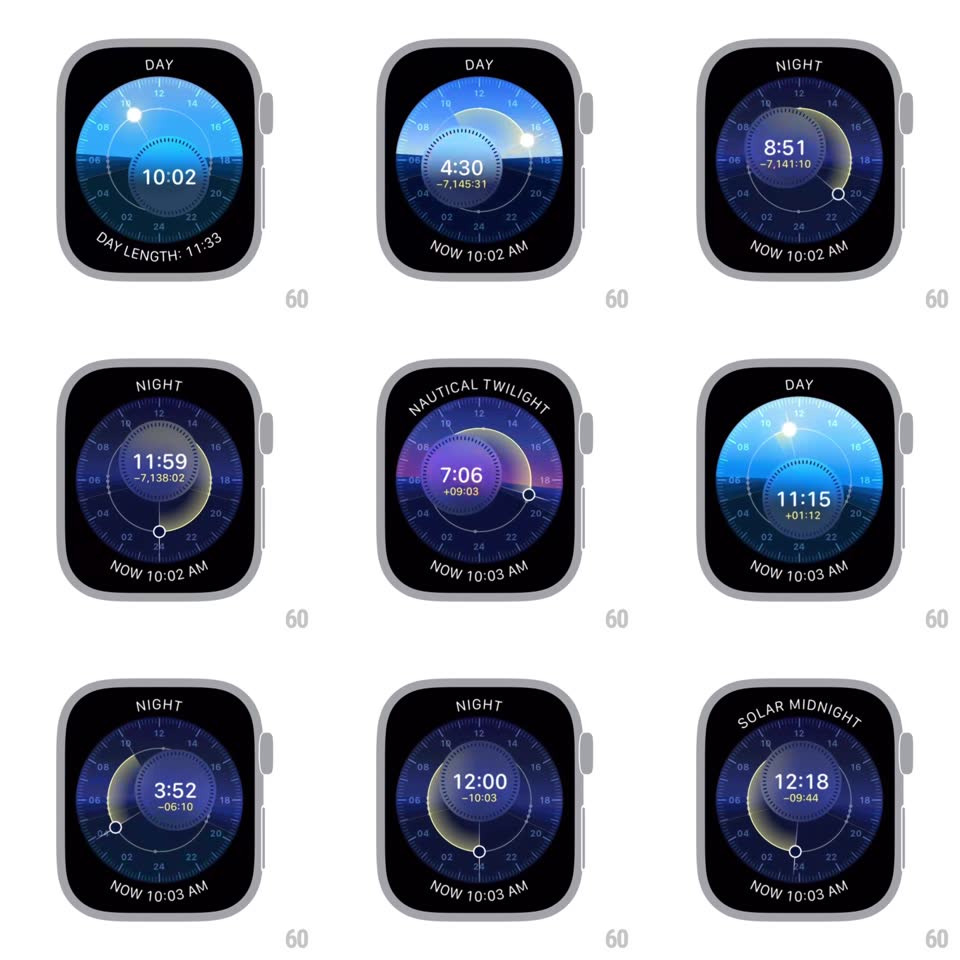

Media
Frame-by-frame

Rebuild this interaction 1:1: the Solar Dial watch face's time travel - turning the Digital Crown scrubs through 24 hours: the sun/moon arcs across the dial's sky, the sky's colors flow through day, civil twilight, night, and solar midnight, and the phase label, digital time, and offset readout update live.

Rebuild this interaction 1:1: the Solar Dial watch face's time travel - turning the Digital Crown scrubs through 24 hours: the sun/moon arcs across the dial's sky, the sky's colors flow through day, civil twilight, night, and solar midnight, and the phase label, digital time, and offset readout update live.
## Integration
Integration: stack-agnostic spec - springs given as stiffness/damping, timed motions as duration + curve; map every value to your framework and animation library of choice.
## Scene
Watch face: a circular 24-hour dial with hour numerals, a sun dot traveling the arc over a blue day sky, horizon line, "NOW 10:02 AM" curved along the bottom, digital time center with a small offset under it, phase label curved along the top (DAY, CIVIL TWILIGHT, NIGHT, SOLAR MIDNIGHT). Night shows a crescent moon on deep indigo.
## Motion spec
Pattern: crown-scrubbed solar time-lapse.
- Crown rotation scrubs time continuously (each crown detent ~6 minutes): the sun/moon dot travels along the arc 1:1 with time, the digital time rolls, and the offset readout ("+05:49", "-7,143:56") appears under the time while scrubbing.
- Sky color interpolates through the phase palette: bright day blue -> twilight orange/purple band at the horizon -> night indigo with stars -> a pale ring at solar midnight; colors crossfade smoothly with the sun's elevation, not in steps.
- The phase label crossfades at phase boundaries (200ms); the horizon glow intensifies near sunrise/sunset.
- Stop scrubbing: after ~1s idle the face eases back to NOW (spring ~240/24, ~600ms) - sun, colors, and time all travel back together along the shortest arc, and the offset readout fades out.
- The bottom "NOW h:mm AM" label is constant and anchors the return.
## Calibration
- Sun elevation drives everything: color, phase label, horizon glow all derive from the same scrubbed time.
- Return-to-now animates through the intermediate sky states, never a cut.
## Reduced motion
Scrubbing still works (it is the feature); the return-to-now is a simple fade.
## Don't miss
- The moon replaces the sun dot below the horizon, waxing the crescent at solar midnight.
- Hour numerals ring the dial at their 24h positions; the 12 is at top, 24 at bottom.